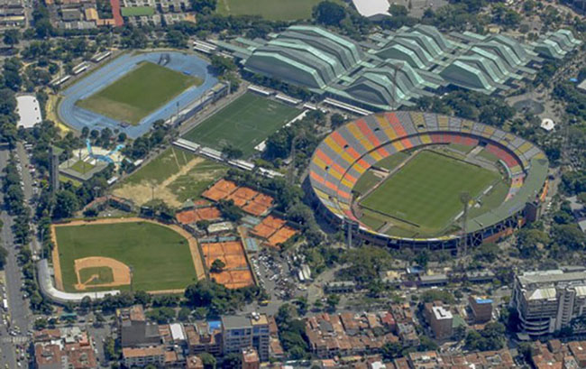
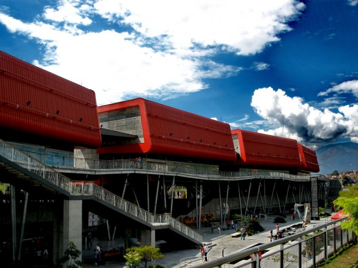
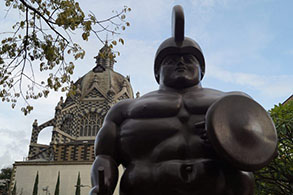

Medellín has wonderful places to spend fun times at with your family and friends.
Some of these places are:

Atanasio Girardot
> Unidad Deportiva Atanasio Girardot <
The Atanasio Girardot sport center is the perfect place to practice any type of sport. This sport center is the most complete and functional of South America.
The sport center includes the soccer stadium, where the city's soccer teams perfom: Atlético Nacional and Independiente Medellín, olympic pools, skating rink, cycle track, basketball courts, several soccer fields, baseball, softball, volleyball courts, as well as spaces for table tennis, chess, martial arts, athletics, etc.

Explore Park
The Explore park is a combination of an aquarium and planetarium.
It has 300 interactive experiences, 3D projection auditorium, television studio, day care and so much more.
This amazing park is the perfect place to take your little ones where you will have the opportunity to experiment, have fun, and learn about our environment. Explore Park is committed to the protection and respect for life, reminding us that we are not alone and that it is important for us to take care of the ecosystem and our planet in general.

Botero Plaza
The Botero Plaza is in front of the Antioquia Museum where you will find the art work of Colombian artist Fernando Botero. The sculptures are made out of bronze and are characterized by its voluptuous figures.
Among the statues are: Caballo, Esfinge, Hombre a Caballo, Cabeza, Pensamiento.